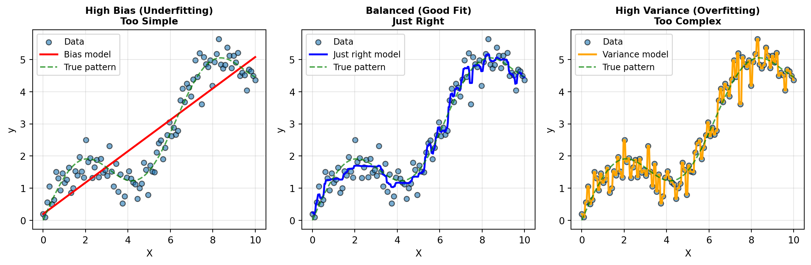
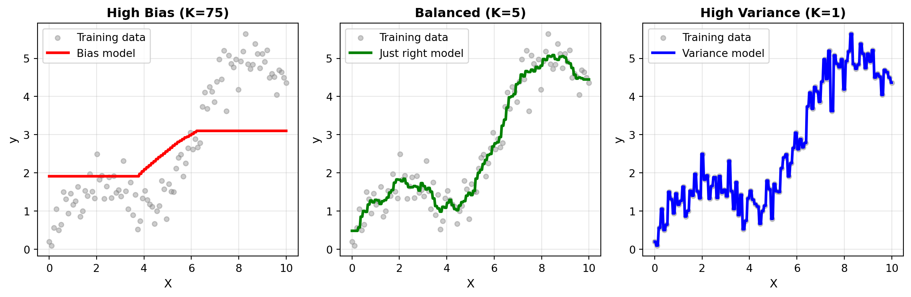

29 Hyperparameter Tuning: Finding Optimal Model Configurations
In the previous chapter, you mastered cross-validation—the proper way to evaluate and compare models without contaminating your test set. You learned the five-stage workflow that keeps your test set pristine while using cross-validation to guide all modeling decisions. Now we tackle a question that naturally follows: How do you systematically find the best configuration for your chosen model?
Throughout Chapters 25-27, you’ve been making choices about model hyperparameters—setting max_depth for decision trees, choosing n_estimators for random forests, deciding on min_samples_split values. But how did you know which values to try? Were you just guessing? And more importantly, how can you be confident you’ve found the best settings?
This chapter introduces hyperparameter tuning: the systematic process of finding optimal model configurations. You’ll start by understanding the bias-variance tradeoff—the fundamental principle that explains why different hyperparameter values produce different results. Using K-Nearest Neighbors as an intuitive case study, you’ll see how a single hyperparameter can dramatically shift a model from underfitting to overfitting. Then you’ll learn how to automate the search for optimal hyperparameters using grid search, which systematically explores combinations of hyperparameter values through cross-validation. You’ll apply these techniques to decision trees and random forests, and explore more advanced optimization methods like random search and Bayesian optimization. Throughout, you’ll see how hyperparameter tuning integrates seamlessly into the proper cross-validation workflow you learned in Chapter 28.
By the end of this chapter, you will be able to:
- Explain the bias-variance tradeoff and identify symptoms of underfitting vs. overfitting
- Understand how hyperparameters control model complexity and generalization
- Analyze how a single hyperparameter (K in KNN) affects the bias-variance tradeoff
- Implement grid search with
GridSearchCVto systematically find optimal hyperparameters - Tune decision trees and random forests across multiple hyperparameters simultaneously
- Compare grid search, random search, and Bayesian optimization approaches
- Integrate hyperparameter tuning into the proper cross-validation workflow
- Apply the complete 5-stage workflow: split, tune, compare, train, and evaluate
NoteFollow along in Colab
As you read through this chapter, we encourage you to follow along using the companion notebook in Google Colab (or another editor of your choice). This interactive notebook lets you run all the code examples covered here—and experiment with your own ideas.
👉 Open the Hyperparameter Tuning Notebook in Colab.
29.1 The bias-variance tradeoff
Before diving into tuning techniques, you need to understand why different hyperparameter values produce different results. The key concept is the bias-variance tradeoff—a fundamental principle that explains the types of errors machine learning models make.
Understanding bias and variance
Every model’s prediction error can be decomposed into three components: bias, variance, and irreducible error (noise in the data that no model can eliminate). Understanding bias and variance helps you diagnose what’s wrong with a model and how to fix it.
Bias measures how far off a model’s average predictions are from the true values. High bias means the model is systematically wrong—it’s making consistent errors because it’s too simple to capture the underlying patterns. This is called underfitting.
Think of a student who only memorizes basic formulas but doesn’t understand the concepts. When facing new problems, they consistently get wrong answers because their approach is too simplistic. That’s high bias.
Variance measures how much a model’s predictions would change if you trained it on different samples of data. High variance means the model is overly sensitive to the specific training data—it’s capturing noise and random fluctuations rather than the true signal. This is called overfitting.
Think of a student who memorizes every single example problem from class, including all the specific numbers and edge cases. They do great on familiar problems but struggle with anything slightly different because they’ve memorized patterns rather than learned principles. That’s high variance.
Here’s a visual way to think about it using a regression example:
Understanding each model:
Left plot - High Bias (Underfitting): The linear regression model (Bias model - red line) is too simple to capture the true underlying pattern (green dashed line). It gets the general upward direction right but systematically misses the curved shape. This is bias—the model is consistently wrong because it lacks the flexibility to fit the true pattern. No matter how much data you give it, a straight line can’t capture a curve.
Middle plot - Balanced (Good Fit): The random forest model (Just right model - blue line) closely follows the true pattern without obsessing over every data point. It captures the underlying trend while acknowledging that some variation is just noise. This is the ideal balance—the model has enough flexibility to capture the real pattern but doesn’t overreact to random fluctuations. This is achieved through the ensemble averaging of multiple decision trees.
Right plot - High Variance (Overfitting): The deep decision tree (Variance model - orange line) with no depth limit passes very close to every single training point, creating wild swings between them. It’s fitting the noise rather than the signal. If you collected new data from the same process, this model’s predictions would change dramatically—that’s high variance. The tree is so deep and flexible it memorizes the training data rather than learning the general pattern.
The irreducible error: Notice that even in the middle plot (good fit), the model doesn’t pass through every data point perfectly. The scatter around the true pattern (green line) represents irreducible error—noise that’s inherent in the data and can’t be eliminated by any model, no matter how sophisticated.
TipBias-Variance Tradeoff
The tradeoff comes because as you make a model more complex to reduce bias, you typically increase variance. Conversely, simplifying a model to reduce variance often increases bias. The goal is to find the sweet spot that minimizes total error.
How hyperparameters control the tradeoff
Hyperparameters are the settings you choose before training that control how the model learns. They’re called “hyper” parameters because they’re parameters about the learning process itself, not parameters the model learns from data (like coefficients in linear regression or splits in a decision tree).
Different hyperparameter values push models toward different points on the bias-variance spectrum. Let’s see concrete examples from models you know:
Decision Trees:
max_depth=2(shallow): High bias, low variance → Underfitsmax_depth=20(deep): Low bias, high variance → Overfitsmax_depth=5(moderate): Balanced → Just right
Random Forests:
n_estimators=5(few trees): Higher variance, less stablen_estimators=500(many trees): Lower variance, more stablemax_features='sqrt'vsmax_features='log2': Controls tree diversity and variance
The art of hyperparameter tuning is systematically exploring these settings to find configurations that minimize total error on unseen data.
29.2 K-Nearest Neighbors: A case study in bias-variance
Before jumping into complex tuning procedures, let’s build intuition using one of the simplest machine learning algorithms: K-Nearest Neighbors (KNN). KNN has a single, easy-to-understand hyperparameter that dramatically affects the bias-variance tradeoff, making it perfect for learning these concepts.
The KNN algorithm
K-Nearest Neighbors (KNN) is one of the simplest machine learning algorithms, yet it’s surprisingly effective. Unlike other models that learn patterns and create mathematical equations during training, KNN takes a different approach: it simply memorizes all the training examples and uses them directly when making predictions. When you ask KNN to predict the target value for a new data point, it looks through the training data to find the K examples that are most similar to the new point. “Similarity” here means closeness in terms of the feature values—for example, if you’re predicting house prices based on square footage and number of bedrooms, KNN finds the K houses in the training data that have the most similar square footage and bedroom counts. To measure this closeness, KNN calculates the straight-line distance between points in the feature space (statisticians call this Euclidean distance, but you can think of it as the “as the crow flies” distance). Once KNN identifies these K nearest neighbors, it looks at their target values and simply averages them together—this average becomes the prediction for the new data point. The beauty and simplicity of KNN is that it assumes similar inputs should have similar outputs, which is often a reasonable assumption in real-world data.
Let’s use the same sine wave data from our bias-variance example to see how K affects KNN regression:
The role of K in bias-variance
The hyperparameter K (number of neighbors to consider) controls the bias-variance tradeoff:
Small K (e.g., K=1 or K=2):
- High variance: Very sensitive to individual training points, including noise
- Low bias: Can capture complex patterns in the data
- Risk: Overfitting—memorizing noise in the training data
Large K (e.g., K=50):
- Low variance: Predictions are stable, averaging over many neighbors
- High bias: Overly smooth predictions that may miss important patterns
- Risk: Underfitting—too simple to capture true complexity
Moderate K (e.g., K=5-15):
- Balanced: Sweet spot between capturing patterns and avoiding noise
Let’s train KNN regressors with different K values and see how they perform:
Sine wave data creation
import pandas as pd
import numpy as np
import matplotlib.pyplot as plt
from sklearn.neighbors import KNeighborsRegressor
# Generate the same sine wave data from bias-variance section
np.random.seed(42)
X = np.linspace(0, 10, 100)
y_true = np.sin(X) + 0.5 * X # True underlying pattern
y = y_true + np.random.normal(0, 0.4, 100) # Add noise
# Reshape for sklearn
X_reshaped = X.reshape(-1, 1)from sklearn.model_selection import cross_val_score
# Try different K values
k_values = [1, 2, 5, 10, 25, 50, 75]
print("K-Nearest Neighbors Regressor: Effect of K on Performance")
print("=" * 65)
for k in k_values:
knn = KNeighborsRegressor(n_neighbors=k)
# Use cross-validation to evaluate (negative MSE)
cv_scores = cross_val_score(knn, X_reshaped, y, cv=5, scoring='neg_mean_squared_error')
# Also check training score to see overfitting
knn.fit(X_reshaped, y)
train_score = knn.score(X_reshaped, y)
print(f"K={k:2d} | Train R²: {train_score:.3f} | CV MSE: {-cv_scores.mean():.3f} (±{cv_scores.std():.3f})")K-Nearest Neighbors Regressor: Effect of K on Performance
=================================================================
K= 1 | Train R²: 1.000 | CV MSE: 0.747 (±0.729)
K= 2 | Train R²: 0.975 | CV MSE: 0.549 (±0.428)
K= 5 | Train R²: 0.958 | CV MSE: 0.444 (±0.266)
K=10 | Train R²: 0.949 | CV MSE: 0.489 (±0.244)
K=25 | Train R²: 0.930 | CV MSE: 0.731 (±0.355)
K=50 | Train R²: 0.810 | CV MSE: 2.077 (±1.694)
K=75 | Train R²: 0.464 | CV MSE: 3.543 (±1.898)Notice the pattern:
- K=1: Very high training R² but higher CV error → Overfitting to noise
- Larger K: Training R² decreases, CV error may improve then worsen
- Gap between train and CV: Indicates overfitting (high variance)
The goal is to find the optimal K value where the CV error is minimized, which should also be the point where the gap between the training error and the CV error is minimized. For this example, K=5 appears to be the optimal hyperparameter malue that balances our bias-variance tradeoff space.
Visualizing the effect of K
Let’s visualize how different K values affect predictions on our sine wave data. We’ll show three cases: high bias (K=75), balanced (K=7), and high variance (K=1):
Visualization code
import matplotlib.pyplot as plt
# Create fine grid for smooth predictions
X_plot = np.linspace(0, 10, 300).reshape(-1, 1)
# Three models with different K values
# 1. High bias (K=75): Over-smoothed
knn_bias = KNeighborsRegressor(n_neighbors=75)
knn_bias.fit(X_reshaped, y)
y_bias = knn_bias.predict(X_plot)
# 2. Balanced (K=5): Captures pattern well
knn_balanced = KNeighborsRegressor(n_neighbors=5)
knn_balanced.fit(X_reshaped, y)
y_balanced = knn_balanced.predict(X_plot)
# 3. High variance (K=1): Memorizes training points
knn_variance = KNeighborsRegressor(n_neighbors=1)
knn_variance.fit(X_reshaped, y)
y_variance = knn_variance.predict(X_plot)
# Create three subplots
fig, axes = plt.subplots(1, 3, figsize=(12, 4))
# Plot 1: High bias (K=50)
axes[0].scatter(X, y, alpha=0.4, s=20, color='gray', label='Training data')
axes[0].plot(X_plot, y_bias, color='red', linewidth=2.5, label='Bias model')
axes[0].set_xlabel('X', fontsize=11)
axes[0].set_ylabel('y', fontsize=11)
axes[0].set_title('High Bias (K=75)', fontsize=12, fontweight='bold')
axes[0].legend(fontsize=10)
axes[0].grid(True, alpha=0.3)
# Plot 2: Balanced (K=5)
axes[1].scatter(X, y, alpha=0.4, s=20, color='gray', label='Training data')
axes[1].plot(X_plot, y_balanced, color='green', linewidth=2.5, label='Just right model')
axes[1].set_xlabel('X', fontsize=11)
axes[1].set_ylabel('y', fontsize=11)
axes[1].set_title('Balanced (K=5)', fontsize=12, fontweight='bold')
axes[1].legend(fontsize=10)
axes[1].grid(True, alpha=0.3)
# Plot 3: High variance (K=1)
axes[2].scatter(X, y, alpha=0.4, s=20, color='gray', label='Training data')
axes[2].plot(X_plot, y_variance, color='blue', linewidth=2.5, label='Variance model')
axes[2].set_xlabel('X', fontsize=11)
axes[2].set_ylabel('y', fontsize=11)
axes[2].set_title('High Variance (K=1)', fontsize=12, fontweight='bold')
axes[2].legend(fontsize=10)
axes[2].grid(True, alpha=0.3)
plt.tight_layout()
plt.show()
Observations:
- K=75 (Bias model): The prediction curve is overly smooth, averaging over too many neighbors. This is very evident at the tails of the prediction line. It misses the sine wave pattern entirely—the model is too simple (underfitting).
- K=5 (Just right model): Captures the underlying sine wave pattern well without being overly sensitive to individual noisy points. This represents good generalization.
- K=1 (Variance model): The prediction passes through every training point exactly, including the noise. The curve is extremely jagged and would generalize poorly to new data (overfitting).
This visualization makes the bias-variance tradeoff tangible: as K increases, we trade model flexibility (variance) for simplicity (bias). The goal of hyperparameter tuning is to find the K value that balances these two sources of error.
29.3 Grid search for hyperparameter tuning
Now that you understand how hyperparameters affect model performance, the question becomes: How do you systematically find the best values? You could manually try different values, evaluate each with cross-validation, and pick the winner. But this is tedious, error-prone, and doesn’t scale. Enter grid search: an automated, systematic approach to hyperparameter tuning.
The grid search approach
Grid search works like this:
- Define a grid of hyperparameter values to try (e.g., K = [1, 3, 5, 10, 15, 20])
- For each combination in the grid:
- Train the model with those hyperparameters
- Evaluate using cross-validation on the training set
- Select the best hyperparameter combination based on CV scores
- Retrain the final model using all training data with the best hyperparameters
- Evaluate once on the test set
The beauty of grid search is that it automates steps 2-3, integrating seamlessly with the cross-validation workflow from Chapter 28.
ImportantGrid Search + Cross-Validation = Proper Tuning
Grid search MUST be combined with cross-validation. If you evaluate hyperparameters on the test set, you’re contaminating it. The proper workflow is:
- Train/test split → Lock away test set
- Grid search with CV → Find best hyperparameters using training set only
- Train final model → Use best hyperparameters on all training data
- Evaluate once → Test set performance
This is exactly the 5-stage workflow from Chapter 28, with grid search happening in stage 2.
Implementing grid search with scikit-learn
Scikit-learn provides GridSearchCV which handles all the complexity for you. Let’s see it in action with KNN on our sine wave data. First, we’ll create a train/test split:
from sklearn.model_selection import train_test_split
# Create train/test split from our sine wave data
X_train, X_test, y_train, y_test = train_test_split(
X_reshaped, y, test_size=0.3, random_state=42
)
print(f"Training set: {len(X_train)} samples")
print(f"Test set: {len(X_test)} samples")Training set: 70 samples
Test set: 30 samplesNow let’s use grid search to find the optimal K value:
from sklearn.model_selection import GridSearchCV
# Step 1: Define the parameter grid
param_grid = {
'n_neighbors': [1, 3, 5, 7, 10, 15, 20, 30, 50]
}
# Step 2: Create a GridSearchCV object
knn = KNeighborsRegressor()
grid_search = GridSearchCV(
estimator=knn,
param_grid=param_grid,
cv=5, # 5-fold cross-validation
scoring='neg_mean_squared_error', # Metric to optimize (MSE for regression)
return_train_score=True, # Also return training scores
verbose=1 # Show progress
)
# Step 3: Fit the grid search (this tries all combinations)
grid_search.fit(X_train, y_train)
# Step 4: View results
print(f"\nBest parameters: {grid_search.best_params_}")
print(f"Best CV score (MSE): {grid_search.best_score_:.3f}")
print(f"\nBest model (already retrained on all training data):")
print(grid_search.best_estimator_)Fitting 5 folds for each of 9 candidates, totalling 45 fits
Best parameters: {'n_neighbors': 7}
Best CV score (MSE): -0.176
Best model (already retrained on all training data):
KNeighborsRegressor(n_neighbors=7)Let’s examine the results more closely:
# Convert results to DataFrame for easier viewing
results_df = pd.DataFrame(grid_search.cv_results_)
# Select relevant columns
results_summary = results_df[[
'param_n_neighbors',
'mean_train_score',
'mean_test_score',
'std_test_score'
]].copy()
results_summary.columns = ['K', 'Train Score', 'CV Score', 'CV Std']
results_summary = results_summary.sort_values('K')
print("\nGrid Search Results Summary:")
print(results_summary.to_string(index=False))
Grid Search Results Summary:
K Train Score CV Score CV Std
1 0.000000 -0.318961 0.057746
3 -0.111991 -0.198662 0.048533
5 -0.137419 -0.181505 0.063209
7 -0.151094 -0.176261 0.061741
10 -0.185900 -0.205077 0.087549
15 -0.225490 -0.250732 0.096721
20 -0.291092 -0.328092 0.148552
30 -0.603248 -0.659089 0.366735
50 -1.994196 -2.094198 0.540174Key insights:
- Grid search evaluated all 9 values of K using 5-fold CV ( \(9 \times 5 = 45\) total model fits!)
best_params_gives you the optimal K valuebest_estimator_is the final model, already retrained on all training data- The gap between training and CV scores shows overfitting (high variance) for small K
29.4 Tuning decision trees and random forests
Now let’s apply grid search to the tree-based models you learned in Chapters 25-26. These models have multiple hyperparameters, creating a multi-dimensional search space.
Key hyperparameters for decision trees
Decision trees have several hyperparameters that control complexity:
max_depth: Maximum depth of the tree
- Low values → High bias (underfitting)
- High values → High variance (overfitting)
- Default: None (unlimited)
min_samples_split: Minimum samples required to split a node
- High values → Simpler trees (higher bias)
- Low values → More complex trees (higher variance)
- Default: 2
min_samples_leaf: Minimum samples required in a leaf node
- High values → Smoother predictions (higher bias)
- Low values → More granular predictions (higher variance)
- Default: 1
max_features: Number of features to consider for each split
- Lower values → More randomness, less overfitting
- Higher values → Less randomness, potential overfitting
- Default: All features
Let’s tune a decision tree on a classification task using the Default dataset from ISLP:
Default data prep
from ISLP import load_data
from sklearn.tree import DecisionTreeClassifier
# Load and prepare data
Default = load_data('Default')
X = pd.get_dummies(Default[['balance', 'income', 'student']], drop_first=True)
y = (Default['default'] == 'Yes').astype(int)
# Train/test split
X_train, X_test, y_train, y_test = train_test_split(
X, y, test_size=0.2, random_state=42, stratify=y
)Now let’s set up a grid search for decision tree hyperparameters:
# Define parameter grid
param_grid_tree = {
'max_depth': [3, 5, 7, 10, 15, 20, None],
'min_samples_split': [2, 10, 20, 50],
'min_samples_leaf': [1, 5, 10, 20]
}
# Create GridSearchCV
tree = DecisionTreeClassifier(random_state=42)
grid_search_tree = GridSearchCV(
estimator=tree,
param_grid=param_grid_tree,
cv=5,
scoring='roc_auc', # Better metric for imbalanced data
verbose=1,
n_jobs=-1 # Use all CPU cores
)
# Fit grid search
print("Searching for best decision tree hyperparameters...")
grid_search_tree.fit(X_train, y_train)
print(f"\nBest parameters: {grid_search_tree.best_params_}")
print(f"Best CV ROC AUC: {grid_search_tree.best_score_:.4f}")Searching for best decision tree hyperparameters...
Fitting 5 folds for each of 112 candidates, totalling 560 fits
Best parameters: {'max_depth': 5, 'min_samples_leaf': 1, 'min_samples_split': 50}
Best CV ROC AUC: 0.9375
Warning500+ models!
This grid searches 7 × 4 × 4 = 112 hyperparameter combinations, each evaluated with 5-fold CV, resulting in 560 model fits! Grid search can be computationally expensive.
Key hyperparameters for random forests
Random forests inherit decision tree hyperparameters plus additional ones:
n_estimators: Number of trees in the forest
- More trees → More stable predictions (lower variance)
- Diminishing returns after a point
- Computational cost increases linearly
- Recommended: Start with 100-500
max_depth: Maximum depth of each tree
- Same as decision trees
- Random forests can handle deeper trees than single trees due to averaging
max_features: Number of features to consider for each split
- ‘sqrt’: √(total features) → Default for classification, good balance
- ‘log2’: log₂(total features) → More randomness, less correlation between trees
- None: All features → Less randomness, more correlation
min_samples_split and min_samples_leaf: Same as decision trees
Let’s tune a random forest:
from sklearn.ensemble import RandomForestClassifier
# Define parameter grid (smaller to save computation time)
param_grid_rf = {
'n_estimators': [50, 100, 200],
'max_depth': [5, 10, 15, None],
'max_features': ['sqrt', 'log2'],
'min_samples_split': [2, 10, 20]
}
# Create GridSearchCV
rf = RandomForestClassifier(random_state=42)
grid_search_rf = GridSearchCV(
estimator=rf,
param_grid=param_grid_rf,
cv=5,
scoring='roc_auc',
verbose=1,
n_jobs=-1
)
# Fit grid search
print("Searching for best random forest hyperparameters...")
grid_search_rf.fit(X_train, y_train)
print(f"\nBest parameters: {grid_search_rf.best_params_}")
print(f"Best CV ROC AUC: {grid_search_rf.best_score_:.4f}")Searching for best random forest hyperparameters...
Fitting 5 folds for each of 72 candidates, totalling 360 fits
Best parameters: {'max_depth': 5, 'max_features': 'sqrt', 'min_samples_split': 2, 'n_estimators': 200}
Best CV ROC AUC: 0.9343Comparing tuned models with grid search
Let’s put it all together and compare our best tuned decision tree vs. the best tuned random forest:
# Step 1-3: Already done above (grid search with CV)
# Step 4: Train final models on all training data (already done by GridSearchCV)
best_tree = grid_search_tree.best_estimator_
best_rf = grid_search_rf.best_estimator_
# Step 5: Evaluate on test set ONCE
from sklearn.metrics import roc_auc_score
tree_test_score = roc_auc_score(y_test, best_tree.predict_proba(X_test)[:, 1])
rf_test_score = roc_auc_score(y_test, best_rf.predict_proba(X_test)[:, 1])
print("\nFinal Model Comparison:")
print("=" * 60)
print(f"Decision Tree:")
print(f" Best params: {grid_search_tree.best_params_}")
print(f" CV ROC AUC: {grid_search_tree.best_score_:.4f}")
print(f" Test ROC AUC: {tree_test_score:.4f}")
print()
print(f"Random Forest:")
print(f" Best params: {grid_search_rf.best_params_}")
print(f" CV ROC AUC: {grid_search_rf.best_score_:.4f}")
print(f" Test ROC AUC: {rf_test_score:.4f}")
print("=" * 60)
Final Model Comparison:
============================================================
Decision Tree:
Best params: {'max_depth': 5, 'min_samples_leaf': 1, 'min_samples_split': 50}
CV ROC AUC: 0.9375
Test ROC AUC: 0.9437
Random Forest:
Best params: {'max_depth': 5, 'max_features': 'sqrt', 'min_samples_split': 2, 'n_estimators': 200}
CV ROC AUC: 0.9343
Test ROC AUC: 0.9411
============================================================Key observations:
- Both models’ test scores are close to their CV scores → Good sign, no contamination
- Random forest typically achieves higher scores due to ensemble averaging
- The hyperparameter tuning process is identical regardless of model type
TipThe Complete Workflow with Hyperparameter Tuning
- Split data → Train/test, lock away test set
- Define models and parameter grids → Set up GridSearchCV
- Grid search with CV → Find best hyperparameters (training set only!)
- Compare models → Use CV scores from grid search
- Train final model → Best model with best hyperparameters (automatic in GridSearchCV)
- Evaluate once → Test set performance
This extends the 5-stage workflow from Chapter 28 by adding grid search in stage 2-3.
29.5 Beyond grid search
While grid search is systematic and thorough, it has limitations:
- Computationally expensive for large grids (exponential growth with parameters)
- Inefficient sampling (tries all combinations even in unpromising regions)
- Curse of dimensionality (grid points become sparse in high dimensions)
Several alternatives address these issues. Two popular ones include:
TipGrid Search vs. Random Search vs. Bayesian Optimization
Use Grid Search when:
- Small number of hyperparameters (≤3)
- Discrete hyperparameter values
- You want to be thorough and systematic
- Computational cost is manageable
Use Random Search when:
- Many hyperparameters (>3) with many value options
- Want to explore diverse configurations quickly
- Limited computational budget
- Early exploration phase
Use Bayesian Optimization when:
- Model training is very expensive
- You need maximum performance
- Complex hyperparameter interactions
- You can invest time learning the library
For this course: Stick with grid search for most tasks. It’s simple, reliable, and works well for the models and datasets you’ll encounter.
29.6 Summary
This chapter equipped you with systematic methods for finding optimal model configurations through hyperparameter tuning.
The bias-variance tradeoff is the fundamental principle underlying hyperparameter tuning. Bias represents systematic error from overly simple models (underfitting), while variance represents sensitivity to training data from overly complex models (overfitting). Hyperparameters like K in KNN, max_depth in decision trees, and n_estimators in random forests control where a model falls on this spectrum—your goal is finding the sweet spot that minimizes total prediction error on new data.
Grid search automates hyperparameter tuning by systematically evaluating all combinations of specified hyperparameter values using cross-validation. Scikit-learn’s GridSearchCV handles the entire workflow: it trains models with each combination using k-fold CV on your training set, selects the best configuration, and retrains the final model on all training data. This integrates seamlessly into the 5-stage workflow from Chapter 28, with grid search happening during model development (stages 2-3).
When tuning decision trees and random forests, you typically optimize multiple hyperparameters simultaneously—max_depth, min_samples_split, and min_samples_leaf for trees; plus n_estimators and max_features for forests. Grid search explores all combinations to find the configuration that balances model complexity and generalization. When computational cost becomes prohibitive, random search efficiently samples the hyperparameter space, and advanced Bayesian optimization methods (like Optuna) can intelligently suggest promising combinations to try next.
ImportantThe Complete Workflow with Hyperparameter Tuning
Your standard approach for every machine learning project now includes:
- Train/test split → Lock away test set
- Define models and grids → Set up GridSearchCV for each candidate model
- Grid search with CV → Find best hyperparameters using training set only
- Compare models → Use CV scores to select best model type and configuration
- Final evaluation → Test set evaluation EXACTLY ONCE
The test set is touched only once, at the very end, ensuring your performance estimates remain trustworthy.
Over the past two chapters, you’ve learned two critical techniques for optimizing model performance: using cross-validation to properly evaluate and compare models (Chapter 28), and tuning hyperparameters to find optimal model configurations (Chapter 29). In the next chapter, you’ll discover a third powerful technique: feature engineering—the art of creating, transforming, and selecting features to give your models better information to learn from. While cross-validation and hyperparameter tuning optimize how your model learns, feature engineering optimizes what your model learns from.
29.7 End of chapter exercises
These exercises give you hands-on practice with hyperparameter tuning using grid search and cross-validation.
NoteExercise 1: Tuning KNN for regression
Use the Ames housing dataset to predict SalePrice using K-Nearest Neighbors regression.
Your tasks:
- Load the Ames housing data and select at least 5 numerical features
- Create a train/test split (80/20)
- Use
GridSearchCVto tune these KNN hyperparameters:n_neighbors: [3, 5, 7, 10, 15, 20, 30, 50]weights: [‘uniform’, ‘distance’]p: [1, 2] (1 = Manhattan distance, 2 = Euclidean distance)
- Use 5-fold CV and optimize for R² score
- Report the best hyperparameters and CV score
- Evaluate the best model on the test set
- Create a visualization showing how
n_neighborsaffects performance
Reflection questions:
- How does the
weightsparameter affect performance? - What does the
pparameter control? Which distance metric worked better? - Is there a large gap between CV and test performance? What does this indicate?
NoteExercise 2: Decision tree depth analysis
Systematically analyze how max_depth affects decision tree performance on the Default dataset.
Your tasks:
- Load the Default dataset and prepare features
- Create train/test split (80/20, stratified)
- For each
max_depthin [1, 2, 3, 5, 7, 10, 15, 20, None]:- Train a decision tree
- Compute training accuracy and 5-fold CV accuracy
- Store results
- Create a line plot showing training vs. CV accuracy across depths
- Identify the depth where overfitting begins (gap between train and CV widens)
- Use
GridSearchCVto tune multiple hyperparameters simultaneously:max_depth: [3, 5, 7, 10, 15, None]min_samples_split: [2, 10, 20, 50]min_samples_leaf: [1, 5, 10, 20]
- Compare the best tuned tree to your depth-only analysis
Reflection questions:
- At what depth does overfitting become apparent?
- Did tuning multiple hyperparameters improve performance over just tuning depth?
- Which hyperparameter had the largest impact on performance?
NoteExercise 3: Random forest comprehensive tuning
Perform comprehensive hyperparameter tuning for a random forest classifier on the Default dataset.
Your tasks:
Part A: Grid Search
- Define a parameter grid with:
n_estimators: [50, 100, 200, 300]max_depth: [5, 10, 15, 20, None]max_features: [‘sqrt’, ‘log2’]min_samples_split: [2, 10, 20]
- Use
GridSearchCVwith 5-fold CV and ROC AUC scoring - Report best parameters and CV score
- Evaluate on test set
Part B: Random Search
- Define parameter distributions:
n_estimators: uniform distribution from 50 to 500max_depth: [3, 5, 7, 10, 15, 20, None]max_features: [‘sqrt’, ‘log2’]min_samples_split: integers from 2 to 100min_samples_leaf: integers from 1 to 50
- Use
RandomizedSearchCVwithn_iter=100 - Compare results to grid search
Part C: Analysis
- Create a bar chart comparing:
- Default random forest (no tuning)
- Grid search tuned
- Random search tuned
- Show both CV and test scores
- Report computation time for each approach
Reflection questions:
- Did random search find better hyperparameters than grid search?
- Was random search faster? By how much?
- How much improvement did tuning provide over defaults?
- Would you recommend random search or grid search for this problem?